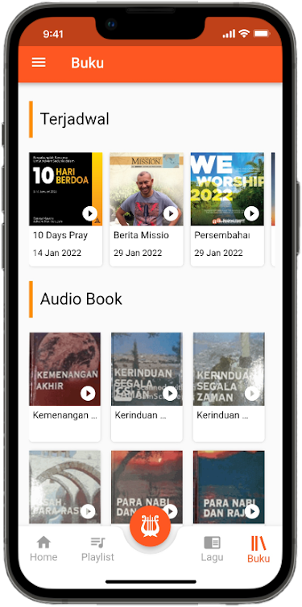
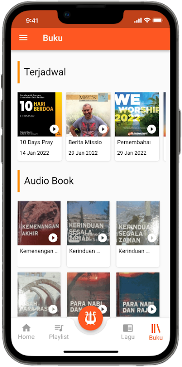
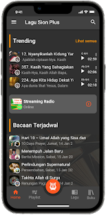
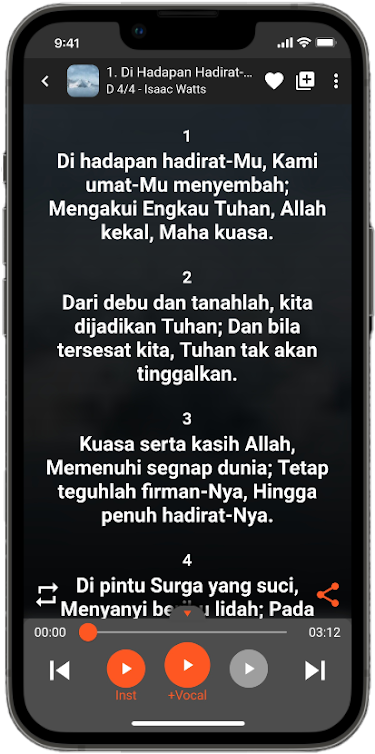
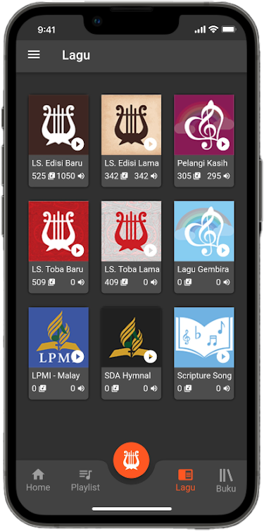
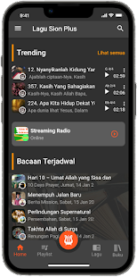
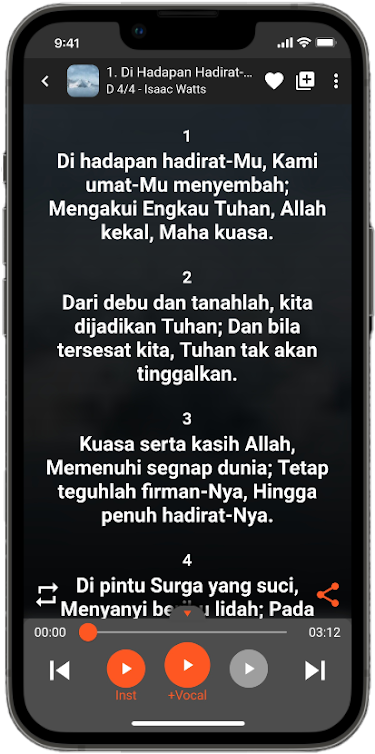
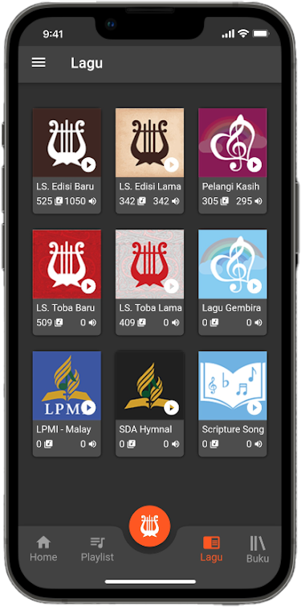

Pujilah Tuhan Hai Jiwaku.
Biarlah segala yang bernafas memuji Tuhan, Haleluya! - Mazmur 150:6


Tersedia banyak buku lagu yang dapat di pilih, LS. Edisi Baru, LS. Edisi Lama, Pelangi Kasih, dll. (beberapa masih dalam tahap penambahan).

Terdapat play instrumen dan play audio vocal, kami juga menyediakan cord hasil scan (tab 2x untuk masuk ke lirik chord).

Kami juga menyediakan buku bacaan yang juga memiliki audio vocal yang dapat di play, mulai dari Renungan Pagi, Sekolah Sabat, Bacaan Mission dll.

Anda dapat mengunduh lagu-lagu yang tersedia di aplikasi lagu sion plus ini, dan memainkannya secara offline.
 

App saya tidak mendapatkan update bacaan
Perhatikan logo aplikasi dibawah ini
dan
Logo kami yang baru terdapat garis-garis tipis di sekitaran kecapi, sedangkan yang lama tidak ada.
1. Jika App Anda ternyata memiliki logo yang lama, Anda hanya perlu melakukan beberapa step berikut ini :
- Masuk ke playstore atau appstore kemudian cari : Lagu Sion Plus
- Pastikan logo yang muncul adalah logo yang terbaru yang memiliki garis tipis-tipis di bagian kecapinya.
- Klik Install atau update dan tunggu proses selesai. Anda akan mendapatkan update bacaan terbaru.
- Selanjutnya Uninstall App Lagu Sion Plus dengan logo yang lama.
2. Jika App Anda ternyata memiliki logo yang baru dengan garis-garis tipis di bagian kecapinya silahkan melakukan beberapa step berikut ini :
- Android : Masuk ke pengaturan -> app -> dan lakukan clear data dan clear cache.
- Masuk kembali ke aplikasi dan Anda sudah mendapatkan update bacaan terbaru.
- IOS : uninstall dan install kembali app lagu sion plus Anda, dan Anda sudah mendapatkan update bacaan terbaru.
Apakah saya bisa manggunakan aplikasi lagusion plus di web?
Bisa, kami menyediakan versi web untuk ibadah online maupun offline, dengan tampilan presentasi layar penuh. Anda hanya perlu masuk ke https://play.lagusion.org/
Apakah ada batasan untuk versi Android?
Kami mendukung versi Android mulai dari versi 5.0 keatas.
Bagaimana cara memunculkan lirik dengan partitur?
Anda hanya perlu melakukan tab 2x pada lirik lagu yang tampil. (untuk sekarang partitur hanya tersedia pada LS. Edisi Baru)
Apakah saya bisa memperkecil dan memperbesar ukuran lirik?
Bisa, masuk ke bagian setting yang terdapat pada sudut kanan atas lirik berbentuk titik 3.
 




